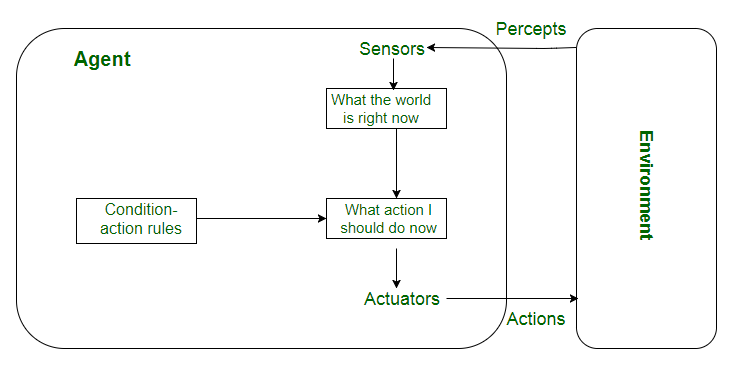

Problem Solving
nishanpantha@gmail.com
What This Chapter Is About
Defining Problems as State Space Search
Problem Formulation
Problem Types
Well-Defined Problems
Constraint Satisfaction Problems
Game Playing
Production Systems
Rational Agents and PEAS
Performance
Environment
Actuators
Sensors
Rational Agents

Simple Reflex Agent
No History
Model-Based Reflex Agent

Goal-Based Agent

Utility-Based Agent
Task Environment
A Vacuum Cleaner with only 2 Locations
Partial Tabulation of a Simple Function
Problem Solving
Goal-Based Agent
Steps
Goal Formulation
Problem Formulation
Searching
Execution
Environment
Static
Observable
Descrete
Deterministic
Open Loop System
Agent carries out its plan with its eyes closed
Well-Defined Problem
- Initial state
- Action and Successor Function
- Path Cost
- Goal Test
Problem Solving Using Search
What is Problem Solving?
Generating solutions from observed data
Problem
- Set of Goals
- Set of Objects
- Set of Operations
Problem Space
All valid states using operations on objects
Search
- Search for solution in problem space
- Example: DFS, BFS,...
8 Puzzle
N Queen

Path Finding

Tower of Hanoi
Actions: PICKUP, PUTDOWN, FORWARD, BACKWARD, LEFT, RIGHT
Condition-1: Only top ring can be moved at a time
Condition-2: Smaller ring cannot be below the large one
Graph Search
- Direct Graph
- Start from Initial State
- Use operations
- Check Goal State
Tower of Hanoi State Space Representation
8-Puzzle State Space Representation
Example: Water Jug Problem

Problem
1 Glass of 3L, 1 Glass of 4L
We want 2L in 4L Glass
Formulation of Problem
Variables: G3, G4
Initial State: (0, 0)
Goal State: (*, 2)
Actions: FILL, EMPTY, ???
Solution
Initial State: (0, 0)
FILL3: (3, 0)
EMPTY34: (0, 3)
FILL3: (3, 3)
EMPTY34: (2, 4)
EMPTY4: (2, 0)
(Goal State)EMPTY34: (0, 2)
Problem
1 Glass of 3L, 1 Glass of 5L, 1 Glass of 9L
Measure 7L of Water
Solution ?
Initial State: (0, 0, 0)
FILL5: (0, 5, 0)
EMPTY53: (3, 2, 0)
EMPTY59: (3, 0, 2)
FILL5: (3, 5, 2)
(Goal State)EMPTY59: (3, 0, 7)
Problem Solving Agent
Problem Types
Single-State Problem
- Deterministic, Accessible
- Agent Knows Everything(exact state) About The World
- Eg: Playing chess
Multi-State Problem
- Deterministic, Inaccessible
- Agent doesn't know exact state
- Eg: Walking in a dark room
Contingency Problem
- Non-Deterministic, Inaccessible
- Agent doesn't know exact state
- Eg: A new skater: sliding problem, many skaters around
Exploration Problem
Discover (eg: Maze)
Cryptarithmetic
Constraint Satisfaction Problem
Variables: x1, x2,...
Constraints: c1, c2,...
Domain: Di (non-empty)
Values: vi
xi=vi, xj=vj
Cryptarithmetic
TWO + TWO = FOUR
States: Cryptarithmetic problem with letters repaced with digits
Actions: Replace letter with unused digit
Goal Test: Puzzle contains only digits
Cryptarithmetic
SEND + MORE = MONEY
9567 + 1085 = 10652
Cannibals and Missionaries
State: 3M and 3C in either side of river
Condition: If C>M at one side, C eats M
Operations: Move using Boat, boat needs 1 or 2 to move
Goal Test: 3C and 3M in the other side of river
Path Cost: Number of crossings
Game Playing
Games are well-defined
Good for testing search methods
Production System
Rules of the form C=>A
Triggered: Pre-condition match
Fired: Action Executed
Production System
Research